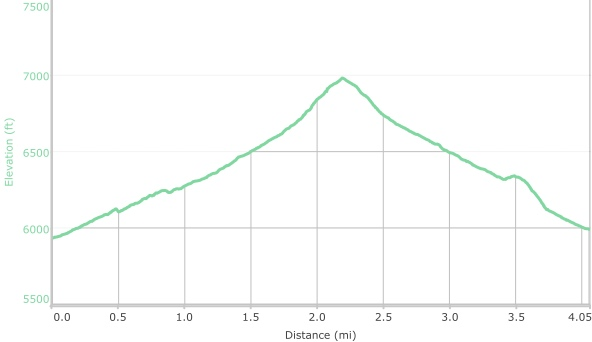

Hike New Mexico
w/ Tom & Ken
Del Agua Trail
| Difficulty | Round-trip | Type | Elev. Chg. | Exposure | Wow Factor | Facilities | Seasons | Photos | By Car |
|---|---|---|---|---|---|---|---|---|---|
| Medium | 4.6 miles | Out-and-back | 1,050 ft | Sun w/ shade | Sandia views | None | Not Winter |
 |
 |



- Sep 24, 2015: View of the mesas looking west
- Sep 24, 2015: A level moment
- Sep 24, 2015: Pause for a view
- Sep 24, 2015: Where Del Agua joins Piedra Lisa
- https://www.flickr.com/photos/139088815@N08/26885317476/in/photostream/
- https://www.flickr.com/photos/139088815@N08/24917919585/in/photostream/
- https://www.flickr.com/photos/139088815@N08/24291027783/in/photostream/
- https://www.flickr.com/photos/139088815@N08/24289739064/in/photostream/
This hike is located at the northern end of the Sandia Mountains, near Placitas NM. While there is some elevation change, there are some level spots, and many great views looking west and north. The hike joins with the Piedra Lisa Trail at its summit.